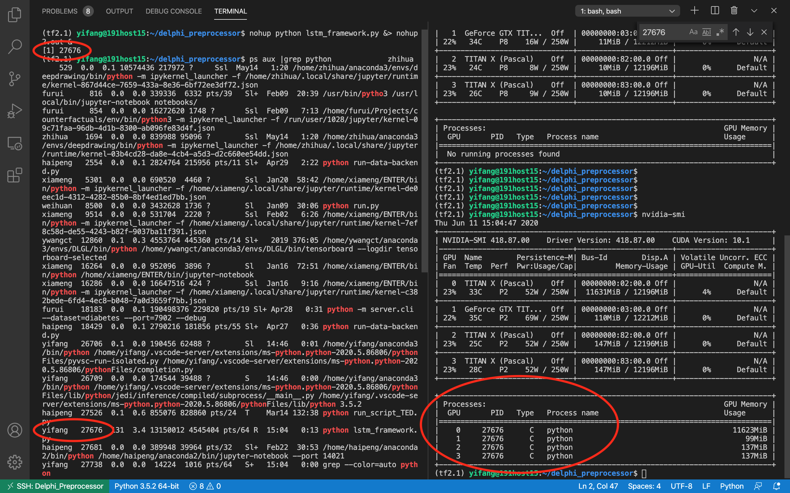

2020：杂谈

【2020年9月1日】很久很久没有更新了。最近在paper recycle，打算转投TVCG以后再好好来梳理一下这几个月的情况。今天想记录的一件事情是，组里举办best reading notes的比赛，我自己没有参与投票，跟上次“你认为最有可能中的paper”一样弃投了。但是没想到结果居然是第一。想到上次的结果好像也是前几名。但是paper不就依然没中么。不禁冷笑：自己仿佛一直以来都抓不住重点，想要每件事情都做的好，却往往顾此失彼。就比如，投稿的时候，每次跟老板meet完以后，都要重新整理会议录音或者Zoom recording，然后贴到BBS上。事实上，这是一件非常耗费时间的事情。我常常在想，是否是因为这种细枝末节的事情过于耗费精力，以至于无法专心思考核心的问题？又或者，我就是为了逃避思考“核心问题”，例如paper的某个技术难点，转而去做这些“细枝末节”的事情？
其实也不能说这些事情完全没有用，就像老板说的，不管是reading list还是meeting notes，都是能够帮助我们养成良好的科研习惯，而我的确在meeting notes这件事情上获益——有一次跟老板的meet，我错误的把一个关键信息（train）听成了“tree”，后来老板在回顾notes的时候指出了，才恍然大悟。
但是，我依旧觉得自己很好笑：解决不了核心问题，老是喜欢用所谓的“认真”的态度去敷衍别人，甚至敷衍自己。到头来，把自己弄得很累，但是却得不到好的结果（没有中paper）。
一直很羡慕那些“聪明”的人：可以为了“重点”而在别的一些事情上适当的“偷懒”。因为始终觉得人的精力是有限的，顾此失彼的事情大家都会发生。
Okay，just有感而发。希望下一次可以直接抓住重点，不害怕，去克服。
【2020年6月11日】劳资终于配好了环境并跑成功了第一个TensorFlow—GPU的代码！！！我靠！！！开心！！！！！

【2020年6月1日】恍惚想起，投稿期间在打腹稿的时候，觉得一个词甚是匹配玉泉f4：磕盐的发小。直到现在，我终于能说出点hk和hz的不同了。在这里，我可以毫无保留的对他们说“我不懂TSNE和DTW”，然后球球他们教我；而在那里，你却不得不端着架子，维持这一个VIS“老学者”的派头，以至于每每都会焦虑到睡不着觉——无人可以找来帮忙，大家都在不一样的领域，坐着不一样的task。很多时候觉得自己特别差劲，却总是懒洋洋的把这种差劲毫无保留甚至厚着脸皮地show给他们。而他们似乎也接受了这个事实，每次都会用看智障的眼神看我一眼，然后告诉解决方法——有点儿像——等待投喂的一些小动物？不禁笑出声。又是六一了。好像心里已经知道了自己即将离开，又开始不安起来。昨天噩梦缠身，接连好几个都是跟回去有关的梦：去HK的酒店接受隔离却发现没带门禁卡；一会儿又变成老板找上门来商量下一年的funding该怎么办，我应该做什么项目来挣工资。昏昏沉沉。起来的时候又差点哭出声——我真的好想呆在这里啊，还是以前的那个417，还是以前的那些人……可是，以前，回不去了。
【2020年5月15日】Delphi在投稿结束以后恢复第一次开会。终于不再排斥model training，开启LSTM之旅。今天John在我汇报的时候各种夸奖（“great!””excellent!”）。但是上个月开会的灰暗记忆依旧历历在目。上个月确实没有多少时间匀出来给Delphi。再加上自己口才不好，草草两句英语就讲完了，都不知道怎么敷衍。但是万万没想到的是，John直接来了一句：“how many hours have you spent on this project?” 气的不轻。但是没法反驳。气的是对方的不理解。无法反驳的是我确实结果不太好。记仇如我至今耿耿于怀。直到今天终于扳回一局。
所以我想说，做一个跟自己研究毫不相关的project真的太耗费精力了。
昨天晚上又是一年一度的抢钱大戏。老板发出了一系列R&D project，叫我们报名下一年的经费项目。但是哈哈不愿意再收人了。别的项目大多是XAI，更加与我无关。打算问问Cameron和兰总。
【2020年5月1日】第四次VIS DDL。第一次一作投稿。八点，结束了。9点，和然总欣欢佳慧吃完肯德基的早餐，告别。在之江旅程结束。头昏昏沉沉的，吃完早饭，走到地铁站，坐地铁。却怎么也睡不着。8点结束，迎来的却不是原先的欣喜，而是无限的忧虑。思考之后三年自己要怎么才能够靠自己生存下来。再也没有业哥几个月帮忙处理数据coding。再也没有伽臣熬夜帮忙做视频。再也没有欣欢及时雨般的救急救我的写作。再也没有。再也没有老巫即使手下学生这么多，还要在ddl最后一天匀出一点时间来帮我看文章。过程中有苦痛，被嫌弃，却总是最后变成那个被照顾的人。
一路上，打开微博，打开淘宝，去逛大麦和马蜂窝，却什么也提不起兴趣。
到家，没人。淘米。耳机里传出陈奕迅的声音。还是那首《你给我听好》。仿佛是一个开关。
嚎啕大哭。
我知道了。我终于知道我在难过些什么。
这是真正的和浙大告别。是我学生时代与浙大最后的交集。
即便是在两年前的毕业典礼上都从未感受到这样的悲伤。就好像当时的毕业仅仅只是毕业而已。或许是觉得自己终究会回来，就像之前的学长学姐一样。
即便在科大近两年，每次回紫金港的时候，总是像回自己家一样。
这一次呢？终究是要说再见了。
未来如何，未可知。或幸运能回校任教，又或许能力不足只能仰望。
但无论哪一种，都不再是如今的模样。即便是ZJUVIS，人来人往，学生终究只是一届又一届的过客，毕业了年长的，马上又有新的血液。而那时候的我又在哪里？我又能认识其中多少人？
我单调的大学生活啊，除了可爱的室友们，唯一的幸运，就是遇见你们啊。
以上。
【2020年4月11日】感觉对于mobility学者来说，更专注于整体变化，但是对于传统历史学者来说，更多的是从微观的案例出发来讲故事。也是一种Balance吧。
【2020年4月10日】整理前天interview老康的录音，我们还聊到，很多时候hire person in a company并不仅仅只能够通过career experience similarity。很多时候还跟这个人是否能很好的融入公司、同事环境有很大的关系，但是这种东西就很难用数据分析来得到。所以其实能够通过计算分析得到的东西真的挺有限的。
蛮有意思的，他还问必佳，which is a better place? 杭州 or 苏州？哈哈哈哈
【2020年4月6日】想起这么多的设计稿、sketch上的、概念画板上的，想起伽臣有一次戏谑的说了句“原先搞的那个tsne现在连渣都不剩了”……迭代这么多次，最后还是不尽人意。总想着最后应该是会有一个fancy的设计，到头来却只是平平无奇的简单拼凑。心比天高不是坏事，但是异想天开就太过奢望了。明明只能够画一个一笔的圆圈，却总想着最后可以得到一个3D的太阳。这就是本人。异想天开的本人。 很多设计，有些是因为不合理被抛弃，有些是因为实现起来费劲或根本不可能（最开始的organization flow）而被抛弃。最后呈现的这个系统，简单的可怜，却也是已经是尝试过无数次才得到的了。
【2020年4月5日】继续找补充的case。打开数据库，看到一条条records，品级一级一级的，还没什么感觉，好像仅仅只是数字而已。但是当开始在另一个数据库中查到名字，打开wiki和百度百科去查阅人物的时候，这些数字便一下子鲜活了起来。人物履历、人物政绩、亲友关系……忽然恍惚——在数据库中存储着的一条一条的冰冷的数据，在此刻，变成了一个又一个人物传记——当冰冷的数字变成故事的时候，他变的有血有肉了起来。我看到了宰相刘罗锅揭发和珅贪腐受贿，我看到了林则徐愤而辞官又被请出山虎门销烟，我看到淮军湘军一干民间团派镇压太平天国，我也看到清末各种政治派别风起云涌，政府无能令许多本想一展抱负的有为青年愤而辞官。其中，有很多事件是无法用现代的career path来解释的，例如父母丧，丁忧停职后又被重新启用等等。这是冰冷数据和鲜活故事的碰撞，也是理性的数据分析和主观的历史事件之间的碰撞。我有时候会感到很无力——两套完全不同的思维经常在打架；有时候又觉得庆幸——理性分析感觉疲乏无助的时候，可以暂时钻进一个个故事中歇一会儿，然后再回来继续。冰与火、天与地、阴与阳，虽然在两极之中周旋常常感到头疼炸裂，但是如若能够找到通信的桥梁，那也将是对两方学者都能够产生裨益的。这或许就是交叉学科的魅力所在吧。
【2020年3月13日】早晨起来，看到VIS投稿延期的通知。百年一遇的感觉。晚上，看到四川的医生去往了意大利支援疫情。这是国内疫情平缓的一周，这也是国际疫情严重起来的一周，从伊朗、韩国、日本，到现在的意大利、美国……一个中国变成一个世界。中国各地的英雄们，从支援武汉，变成了支援世界。就是很感动。这段时间来，不知道哭了多少次。在房间里为了自己的无措而哭，打开手机看到逆向而行的英雄们而哭。忽然有了念头，投完稿，把自己的生活和疫情关联在一起。做一个时间线吧（微信的聊天记录啊、微博的原创啊）。我现在甚至都可以想象，自己的渺小，在这苍茫的世界中，不值一提。
【2020年3月8日】突然发现原来又到三八节。遗憾今年收不到老板的玫瑰花了。晚上，跟业哥讨论，发现mainview的encoding有很大的问题。致命性的。真的很绝望。非常不顺，满脑子都是倩雯的那一句“泥淖中爬行”。很失落。跟乐妮讨论解决方法，还好有这位小伙伴一直在一起。快十二点了，打开朋友圈。老板发的那一段话又让我泪目。加油和鼓劲，满满的都是身为老师的鼓励。想起去年的时候，好像就是这一天，早晨跟乐妮在食堂吃早饭讨论coding，被老板偷拍了。往事依旧鲜活，却不觉又是一年。白天老板和老巫都发了CS女性学者的比例在上升，都是一种鼓励。想到老板前段时间群里说的：关键是这次学到了什么没有。是啊，没有什么东西是一蹴而就的，有学习到，就可以了。
【2020年3月8日】我开始思考自己的学习模式。每一样东西都是新接触。似乎没有一样东西是精通的。我觉得我需要掌握一个可以“谋生”的优势，而不是每一件事都是平平无奇的。所谓“三好生”，其实放置在那些各个领域专业的精英面前（coding,design,speech）很快就沦落为“平庸者”。还是要培养自己的核心竞争力。所谓的“长板”。
【2020年3月6日】写Task。坐在电脑前面却什么也写不出来。想出门，开窗，却发现下雨了。就这么趴在窗台上，发呆。白噪音真好啊，春雨，淅淅沥沥的，不大，落在遮雨板上叮叮当当，落在泥土里滴滴答答，落在河水里没了声响。前面的柳树早已完成了抽芽，黄绿的一大片，连成一条叫做春天的色带。空气里似乎弥漫着一股奇怪的味道。努力嗅了嗅，炊烟吗？城市里怎么会有炊烟呢？再嗅了一下，中药吗？是楼下邻居在煎药吗？好像也不是。闭上眼睛，再嗅了嗅——唔……好像就是雨水打在泥土上的味道呢……久违了，“泥土的芬芳”。
【2020年3月1日】在看event sequence的paper。不禁感叹真的是一个新手。虽然在可视化圈子三年了，但本科看的都是ARVR以及inforgraph和personalvis的东西，这一次，从头学sequence mining，知道了很多工具，知道了tensor等概念。盲区正在缩小……现在突然有一种“学习使我快乐”的错觉。为什么以前没有呢？因为以前一直很焦虑，焦虑自己为什么知道的这么少，为什么我应该知道的却没有知道。而现在，就把自己当一个新手去学，就会觉得，嗯，又学到新东西了呢……
【2020年2月29日】四年一遇的一天，开了两个会。下午是老巫组的项目进度报告，自己的进度（写作和系统）都落后很多，但还是收到了老巫的鼓励。（期间自己报告完忘记关麦，大家听到了窝猪蹄般的狂笑）。晚上拉了伽臣，然后和老巫业哥一起开会。前一个会是俊修和欣欢，本来说好是十点半结束的，后来到了十一点多了还在继续。本以为应该就拖到明早了，万没有想到十一点半老巫来信息了说是可以开始了。急忙叫起了业哥和伽臣。然后confirm了一下现在的进展和方向。然后居然就零点三十了。2月29号，25岁的2月29号，结束了。我真的感觉到很温馨，一点都不孤单。因为老师是鼓励的，还有很多小伙伴在一起帮助我。好像紧张的投稿期就像以前闲暇的日子一样。为什么一定要把读博弄得很苦呢？就好像是苦难一样。为什么就不能跟伽臣那样，作息规律，从不熬夜，就像正常工作那样完成一次一次的投稿呢？
【2020年2月21日】上午开完Delphi项目会。对方公司根本就不care你是不是在投稿。自从项目换了leader，cliff离职了以后，就换了一个更加touch的人。明明上次说的是接下来就看LSTM就可以了，这次又变卦，变成提高之前结果的准确度。本来就是从sample里面得到的rule-based规则，肯定很不标准啊……
另一头，业哥又很多要求，嫌弃这那。确实是我的问题，因为想不清楚。变了又变。我觉得我越来越像欣欢口中的海鹏了。“他自己没主意。”
看着面前sketch的界面，脑子一片空白：Network的设计还没弄出来；算法的group detection还没弄出来。界面的Layout又不断在变动……
我真的不行了。没有人可以倾诉，大家都很忙。打开QQ音乐，试图听五月天的摇滚，却愈发烦躁。看到推荐歌单里面有陈奕迅。
点进去——“你给我听好”。眼泪止不住的流出来。流啊流，循环了三四遍，眼泪就这样流啊流……到头来，我只是一个没有一技之长的人。coding，writing，design，idea，什么都没有掌握。到头来，连一个可以打电话过去倾诉的人都没有。又或者，内心会问自己：凭什么呢？凭什么人家要听你倾诉？人家跟你有这么熟吗？
一个人爆哭。哭累了，就好了。
你别说，这方法还挺好的。二十分钟以后，内心无比平静。不打扰别人，自己解决。
就这样吧，还能烂到哪儿去呢？
【2020年2月17日】本以为2月开始业哥开发我写文章。却没曾想是连model都还没有。怪谁呢？一周换一个技术重点，而且还不知道怎么去解决。简直天方夜谭。试问模型从何来？问紫坤，曰：“郑宇那边在做啊”；问宇哲，曰：“巍巍那边早就搞定了”。而我的domain：“We’re just using very simple regression which I think is not useful to you.”…一开始就给自己的文章定错了位，原以为是一篇domain提供模型、我修改并设计可视化的paper，没曾想是自己yy自己找技术问题自己去找方法解决的paper……苦笑：明明一年半以来各种人劝我不要选这个topic，选点先能够让自己立足的，再去尝试这个。可是脑子可能就是滑塌了，就是想搞这个。就好像……就好像是夙愿一样。好吧，痛苦既是自找，那就自己承受。大不了接下来一年被辱骂，甚至退学，都是事出有因——因为自己笨，自己不会权衡，自己不会算计，自己还喜欢逞强。Fine。
【2020年2月3日】正在设计界面，找case。看到品级的数据，忽而想起bijia告知的“品级数据有很大的问题”。又想起她说为了培养自己传统的“史学家”的修养，才到人大清史所去深造，去学习真正的历史学。忽然觉得很戏谑。自己和Cameron仿佛是介于文史和计算机之间的边缘人物，传统史学家着重考证，而我们却想方设法的想去“计算”。到头来很有可能双方都难以理解我们干的事情。不禁苦笑。
【2020年1月26日】农历大年初二。直到今早上看到消息，出门去药店试图买口罩，我的心才开始慌张起来。这几天雨一直下个不停，骑着电瓶车在路上，行人寥寥，灰霾的天空下，枯树叶被雨水拍打着，做着飘落前最后的抵抗。视野倒是清晰不少，连日的雨水打落了雾霾，却也使街道显得更加清冷。零星的行人都带着口罩，有些是蓝色的医用口罩，有些是白色的棉布口罩，还有些跟我一样，只是带着海绵口罩。死寂。脑海中忽的就蹦出了这个词。这是我二十四年来从未见过的样子。即便是在G20峰会、外来务工者都回乡的时候都没有过这样的荒凉。同样是行人寥寥，而这一次的不同在于，多出了口罩。
雨水浸湿了发檐，淋湿了眼镜，却一刻都不敢停下。进了潘水的两家药店，先是海王星辰，问还有口罩吗，店员说卖完了。我心中便生出不好写预感。再往前走第二家，还没定稳车，便看到门口贴着“口罩卖完”的告示。转而去高桥，拉开店门，往里面问：“请问口罩还有吗？”，店员大妈带着绿色的带阀门的口罩机械的摇了摇头。第二家店门口也贴出了口罩已售罄的字样。再找下去也是徒劳，启程往回走，抱着最后一丝希望去小区门口的药店。正挣扎着想要从电瓶车上下来，药店阿姨就探出头来问：“你要什么？别下来了”“口罩还有吗？”她一副“我就知道你要买口罩”的神情：“没有了！”至此，白走一趟的行程结束。
空无一人的路面上，只剩下雨水拍打的声音，粼粼的寒风，再加上因雨水洗刷而变得异常清晰的景象和前方漂浮着的片片灰云，我感觉自己仿佛瞬间置身于一个病态的环境之中，好像扑面而来的不是雨水，而是消毒液——酒精的味道，充斥着整个城市。我开始慌了。
【20191221】今天回想起前段时间的事情。好像啥也没做。12月初期的焦灼来自于科大人文学院的淡漠。其实十月底就发过邮件给老康，但是没回复，十一月中旬又发了邮件，终于有了回复，但是你来我往的又是好几次，却依旧没有拿到数据。这令我很心慌。再者就是不清楚老板的态度。因为其实老板一直对缙绅录这个项目颇有言辞，以前四维做的时候就斥责“死人的东西做他干甚！”，这种情绪甚至在我PQE的几次personal meet中也有体现。老板的担心不无道理：你以后要是想当老师，尤其是计算机学院的，那么其实你博士期间的研究项目要足够能够展现你的技术。但是这个DH或者CSS领域，本就小众，你还选了这么一个中国古代资料作为数据集，简直就是小众中的小众。每每到此，我就问自己：那还能做什么呢？好像什么也做不了了。我现在回想，或许是有东西的，但是这个数据就好像横跨在我面前的一道无形的高墙，你怎么也跨越不了。所以后来当老板态度转变、甚至说感到很“exciting和promising”的时候，我真的很开心：我开心他的支持，开心他说的“你要是想做，just do it”。
我好像真的花了一周的时间，等待老康的答复，等待数据。
拿到数据以后，又花了一周的时间去探索属性，重拾Python和前端。清楚地记得，周三的晚上，因为Python画不出multiline chart，以为是plt的问题，打算借此学习VUE+Flask。学了一天，终于搞懂了，晚上的时候伽臣来看：“你在干啥？”“画linechart。”“Python不是也能么？”“不能啊……”“我说你写……”然后，然后就画出来了……我也不知道自己当时脑子怎么回事……
第二天，接着受打击。晚上画linechart，死活画不出来。业哥坐在旁边看了许久也没发现问题。后来发现multiline chart的data只能是二维数组而不能是一位数组。。。
两件事给人的感觉就像：好久好久没有磨刀了……刀都生锈了……